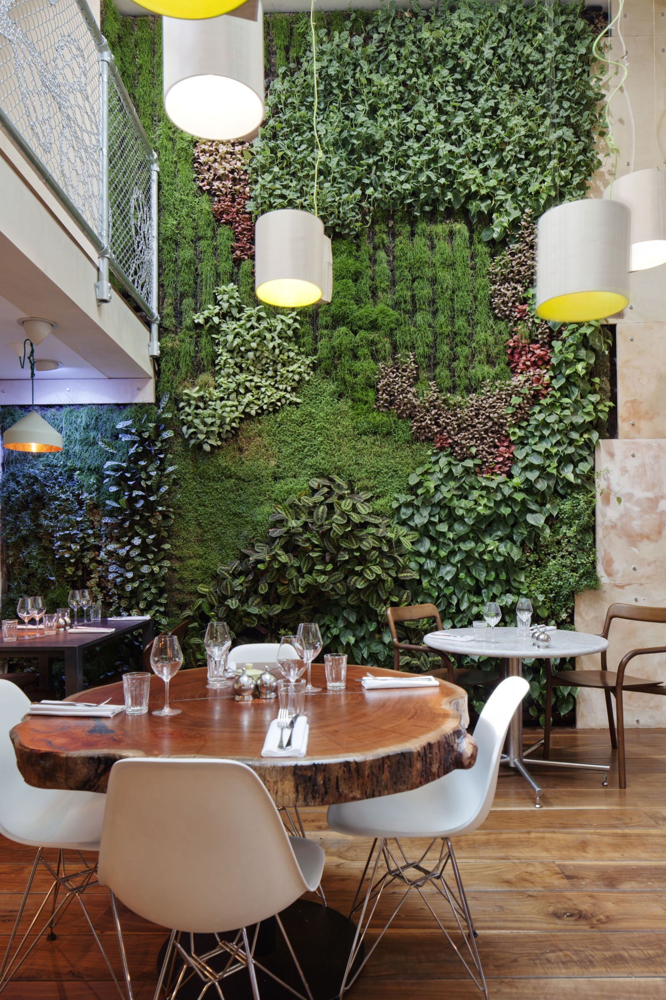
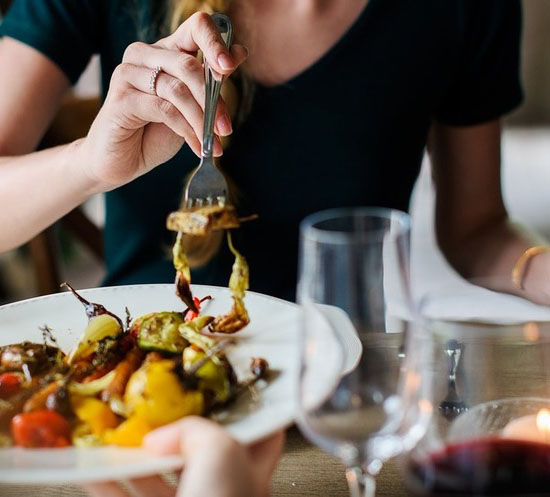
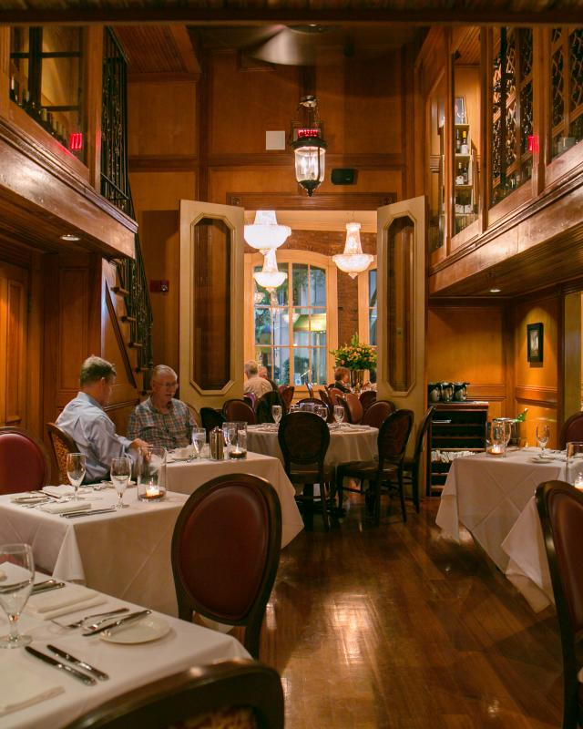

ИСТОРИЯ
Наш ресторан недавно открылся в центральной части города, недалеко от Дворца Украины по улице Коновальца. FoodCore это ресторан с живой музыкой, изысканными морскими блюдами и украинским колоритом. Изысканно-сдержанный интерьер окунает нас в средиземноморский
уют и морскую стихию. Приглушенный свет, отраженный от металлических светильников, морская символика, деревянная крутая лестница на летнюю террасу, корабельные канаты и мягкие уютные кресла окружают Вас и дарят незабываемые ощущения близости
моря. В интерьере все продумано до мелочей и созданная атмосфера позволяет расслабиться и получить удовольствие от любого звука, шороха, аромата или блюда


ТРАДИЦИИ
Мы любим творческие эксперименты, которые происходят от сочетания «высоких» и «низких» концепций продуктов питания. Недавно мы предложили «Ethan Special», основанный на обеде 10-летнего племянника Пола - белый хлеб, болонья, майонез, сыр с разбитым доритосом.
Мы предложили слегка увеличенную версию, включающую мортаделлу серого плюма, поданную с луком на луке ролл и - для тех, кто хотел именно «Этан Стиль» - Доритос на стороне ». Может быть, мы познакомим клиента с новым приготовлением пищи,
которое они не пробовали бы раньше. Может быть, мы удалим некоторые претензии, связанные с изысканным ужином. Или, может быть, мы просто оставим вас с полным животом и прекрасной памятью.
КУХНЯ
На кухне «правит» один из лучших шеф-поваров Украины, именитый Юрий Приемский. Как уточняет сам Юрий, к традиционной украинской кухне меню ресторана имеет косвенное отношение. Все блюда – авторские и гастрономические, созданные по принципу интересных
и сложных сочетаний ингредиентов. Каждый месяц меню обновляется, чтобы гости могли насладиться сезонными продуктами, которые опять же преподносятся нестандартно. Креативные подачи – конёк ресторана. Поэтому не удивляйтесь, если Ваше блюдо
будет преподнесено в дыму из сухого льда или приготовлено прямо при Вас!
